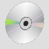

Especificações
CPU
• LSI Logic Corp
• R3000A RISC
• Barramento: 32 bits
GPU
• GPU 53,2 MHz
• 16,7 milhões de cores
• Resolução: 256x224 - 640x480
• 4.000 8x8 pixel sprites com escala e rotação individual
• 360.000 polígonos / sec
Memória
• RAM principal: 2 Megabytes
• VRAM: 1 Megabyte
Controle
SCPH-1010
O controle do PlayStation, que implantou um design completamente inovador e bastante ergonômico, graças às duas saliências inferiores para melhor empunhadura das mãos, veio a se tornar quase um molde para controles de plataformas futuras (de fato, para os PS seguintes o formato permaneceu inalterado enquanto que para a maioria das outras plataformas o desenho foi tomado como base). Teve, contudo, ao que parece, um elemento de inspiração no controle do SNES: botões na parte superior (os chamados L e R); mas, como melhoria ao recurso, a manete da Sony implementou quatro botões no topo (L1, L2, R1 e R2).
Cartão de memória
Memory Card
O cartão de memória permitia salvar dados dos jogos e o progresso do usuário no jogo para continuar do ponto em que parou.

Mídia
CD
• Capacidade normal: 700 MB
• Double speed
• XA-Compliant
PS COMBO
Tela Integrada
A Sony também lançou uma versão com uma tela LCD de 5 "e um adaptador (apesar de não ter bateria: é alimentado conectando o adaptador a uma tomada principal ou a um carro). Foi chamado de pacote Combo. No entanto, inclui um conector de fone de ouvido (para fones de ouvido ou outra conexão de áudio) e um mini conector AV para conectar câmeras de vídeo ou outros dispositivos.